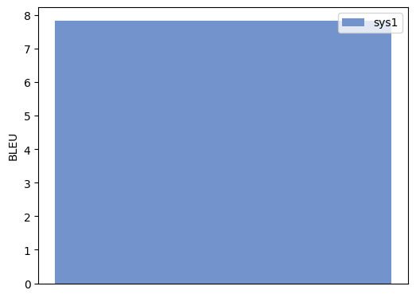
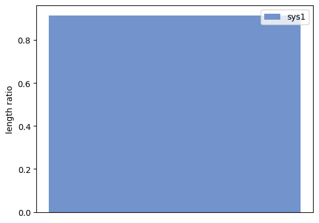
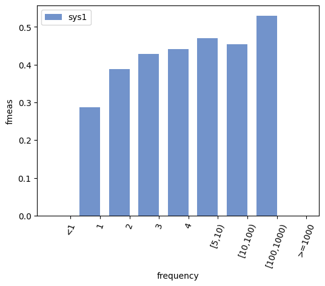
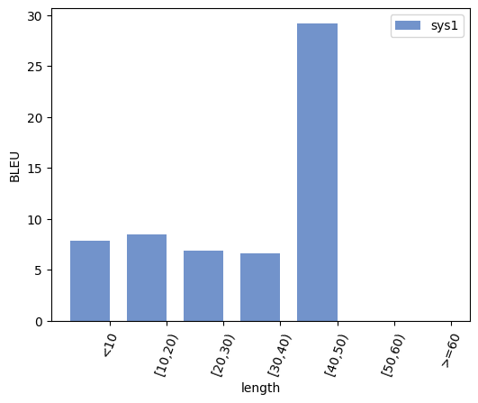
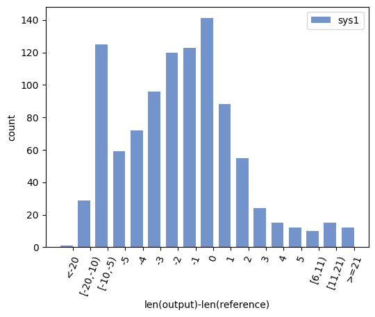
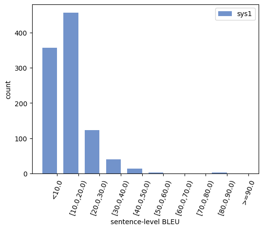

compare-mt Analysis Report
Aggregate Scores
\begin{table}[t]
\centering
\begin{tabular}{c||c}
& sys1 \\ \hline \hline
BLEU & 7.8346 \\
\end{tabular}
\caption{Caption}
\label{tab:table001}
\end{table}
\begin{figure}[h]
\centering
\includegraphics{001-score-bleu.pdf}
\caption{Score Comparison}
\label{fig:001-score-bleu}
\end{figure}
length ratio | |
sys1 |
| length ratio |
0.9146 (ref=16608, out=15190) |
\begin{table}[t]
\centering
\begin{tabular}{c||c}
& sys1 \\ \hline \hline
length ratio & 0.9146 (ref=16608, out=15190) \\
\end{tabular}
\caption{Caption}
\label{tab:table002}
\end{table}
\begin{figure}[h]
\centering
\includegraphics{002-score-lengthrat.pdf}
\caption{Score Comparison}
\label{fig:002-score-lengthrat}
\end{figure}
Word Accuracies
\begin{table}[t]
\centering
\begin{tabular}{c||cc}
frequency & sys1 & Examples \\ \hline \hline
\textless1 & 0.0000 & \textlessa href="003-wordacc-frequency.html#bucket0"\textgreaterExamples\textless/a\textgreater \\
1 & 0.2864 & \textlessa href="003-wordacc-frequency.html#bucket1"\textgreaterExamples\textless/a\textgreater \\
2 & 0.3891 & \textlessa href="003-wordacc-frequency.html#bucket2"\textgreaterExamples\textless/a\textgreater \\
3 & 0.4282 & \textlessa href="003-wordacc-frequency.html#bucket3"\textgreaterExamples\textless/a\textgreater \\
4 & 0.4411 & \textlessa href="003-wordacc-frequency.html#bucket4"\textgreaterExamples\textless/a\textgreater \\
{[}5,10) & 0.4707 & \textlessa href="003-wordacc-frequency.html#bucket5"\textgreaterExamples\textless/a\textgreater \\
{[}10,100) & 0.4536 & \textlessa href="003-wordacc-frequency.html#bucket6"\textgreaterExamples\textless/a\textgreater \\
{[}100,1000) & 0.5300 & \textlessa href="003-wordacc-frequency.html#bucket7"\textgreaterExamples\textless/a\textgreater \\
\textgreater=1000 & 0.0000 & \textlessa href="003-wordacc-frequency.html#bucket8"\textgreaterExamples\textless/a\textgreater \\
\end{tabular}
\caption{Caption}
\label{tab:table073}
\end{table}
\begin{figure}[h]
\centering
\includegraphics{003-wordacc-frequency-fmeas.pdf}
\caption{Word Accuracy Analysis}
\label{fig:003-wordacc-frequency-fmeas}
\end{figure}
Sentence Buckets
bucket type: length, statistic type: BLEU | length |
sys1 |
| <10 |
7.8442 |
| [10,20) |
8.4886 |
| [20,30) |
6.8427 |
| [30,40) |
6.6193 |
| [40,50) |
29.2017 |
| [50,60) |
0.0000 |
| >=60 |
0.0000 |
\begin{table}[t]
\centering
\begin{tabular}{c||c}
length & sys1 \\ \hline \hline
\textless10 & 7.8442 \\
{[}10,20) & 8.4886 \\
{[}20,30) & 6.8427 \\
{[}30,40) & 6.6193 \\
{[}40,50) & 29.2017 \\
{[}50,60) & 0.0000 \\
\textgreater=60 & 0.0000 \\
\end{tabular}
\caption{Caption}
\label{tab:table074}
\end{table}
\begin{figure}[h]
\centering
\includegraphics{004-sent-length-bleu.pdf}
\caption{Sentence Bucket Analysis}
\label{fig:004-sent-length-bleu}
\end{figure}
bucket type: len(output)-len(reference), statistic type: count | lengthdiff |
sys1 |
| <-20 |
1 |
| [-20,-10) |
29 |
| [-10,-5) |
125 |
| -5 |
59 |
| -4 |
72 |
| -3 |
96 |
| -2 |
120 |
| -1 |
123 |
| 0 |
141 |
| 1 |
88 |
| 2 |
55 |
| 3 |
24 |
| 4 |
15 |
| 5 |
12 |
| [6,11) |
10 |
| [11,21) |
15 |
| >=21 |
12 |
\begin{table}[t]
\centering
\begin{tabular}{c||c}
lengthdiff & sys1 \\ \hline \hline
\textless-20 & 1 \\
{[}-20,-10) & 29 \\
{[}-10,-5) & 125 \\
-5 & 59 \\
-4 & 72 \\
-3 & 96 \\
-2 & 120 \\
-1 & 123 \\
0 & 141 \\
1 & 88 \\
2 & 55 \\
3 & 24 \\
4 & 15 \\
5 & 12 \\
{[}6,11) & 10 \\
{[}11,21) & 15 \\
\textgreater=21 & 12 \\
\end{tabular}
\caption{Caption}
\label{tab:table075}
\end{table}
\begin{figure}[h]
\centering
\includegraphics{005-sent-lengthdiff-count.pdf}
\caption{Sentence Bucket Analysis}
\label{fig:005-sent-lengthdiff-count}
\end{figure}
bucket type: sentence-level BLEU, statistic type: count | sentbleu |
sys1 |
| <10.0 |
357 |
| [10.0,20.0) |
457 |
| [20.0,30.0) |
123 |
| [30.0,40.0) |
40 |
| [40.0,50.0) |
14 |
| [50.0,60.0) |
3 |
| [60.0,70.0) |
0 |
| [70.0,80.0) |
0 |
| [80.0,90.0) |
3 |
| >=90.0 |
0 |
\begin{table}[t]
\centering
\begin{tabular}{c||c}
sentbleu & sys1 \\ \hline \hline
\textless10.0 & 357 \\
{[}10.0,20.0) & 457 \\
{[}20.0,30.0) & 123 \\
{[}30.0,40.0) & 40 \\
{[}40.0,50.0) & 14 \\
{[}50.0,60.0) & 3 \\
{[}60.0,70.0) & 0 \\
{[}70.0,80.0) & 0 \\
{[}80.0,90.0) & 3 \\
\textgreater=90.0 & 0 \\
\end{tabular}
\caption{Caption}
\label{tab:table076}
\end{table}
\begin{figure}[h]
\centering
\includegraphics{006-sent-sentbleu-count.pdf}
\caption{Sentence Bucket Analysis}
\label{fig:006-sent-sentbleu-count}
\end{figure}